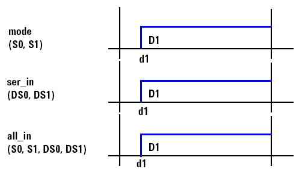

Margin Mode
Select whether the margin test shall be carried out serially, in parallel, by pairs or by groups on the specified pins or pin groups:
- Serial option: All selected pins are tested one after the other, the resource to be varied is shifted on a pin per pin basis. A pin used in several selected groups or ports is only tested once. Using the Serial option normally leads to an increased test time compared to the Parallel option.
- Parallel option: The pin margin tool takes all selected pins and builds subsets of pins that are programmed identically (same waveform, same edges). The pins of each subset are tested in parallel. The margins of such a subset are determined by its worst case pins for the lower and upper margin.
- By Pairs option: Both legs of a differential pair are tested in parallel. All differential pairs are tested one after the other.Choosing a pin that does not have its differential pin pair defined will cause the pin to execute as a single-ended pin rather than as a differential pair.
- By Groups option: Within each group, the pins are tested in parallel,
while the groups are tested serially, one after the other.Note Do not confuse Groups and By Groups. Please consult the following distinction. Groups stands for groups defined by the user in the setup. By Groups denotes groups built by the margin tool. Such a group has the following characteristics:
- Its members are pins and/or groups that are defined in the setup
- All members of the group have identical waveforms and edges. If group member waveforms or
edges vary, measurement problems will result.
The following example illustrates the impact of the selection (pin/group) and option (Serial/Parallel/By Groups) on the margin results (see the figure below).

The group mode is composed of the pins S0 and S1.
The group ser_in is composed of the pins DS0 and DS1.
The group all_in is composed of the pins S0, S1, DS0 and DS1.
The margin of edge d1 shall be determined. The resulting margin measurements for the different combinations are explained in Timing Options.
|
Serial |
Parallel |
By Groups |
|---|---|---|---|
pins selected: S0, S1, DS0, DS1 |
A margin measurement for each pin is performed independent from the pin/group selection.
|
Only one pin margin meas. for all pins is performed because the pins have identical edges and waveforms; the pin or group selection has no impact on the results. |
Not possible because pins cannot be selected. |
groups selected: mode, ser_in |
A pin margin meas. for each group. The groups need not to be divided into subgroups, because the members of each group have identical edges and waveforms. |
||
groups selected: all_in |
One pin margin meas.; group needs not to be divided into subgroups, because all members have identical edges and waveforms. |
||
groups selected: all_in, mode, ser_in |
A pin margin meas. for each group. |